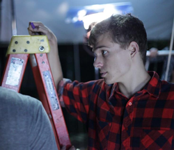
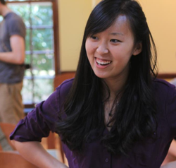
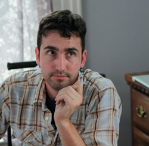

Crew
 Nick Hurt (nicolashurt.com) Writer | Director | Producer Nick has produced multiple independent short films, including The Perils of Growing Up Flat-Chested, an official selection of the Palm Springs International ShortFest and winner of the 2012 Steeltown Film Factory competition, as well as First Kiss, an official selection of the 2012 HollyShorts Film Festival. Nick has a BS in Business Administration from Carnegie Mellon University and leaps at the chance to produce any film that tells a meaningful story.
 Yulin Kuang (www.yulinkuang.com) Writer | Producer Yulin, a recent alum of Carnegie Mellon University's writing and film program, has written, directed, and produced a number of award-winning short films and webseries with university funding and external production grants. Her senior thesis film, First Kiss was a finalist short at the 2012 Hollyshorts Film Festival. Her first film following graduation, The Perils of Growing Up Flat-Chested was the first place winner of the Ellen Kander Weiss production grant from the Steeltown Film Factory screenwriting competition, and is currently starting its festival circuit at the Palm Springs International ShortFest.
 Dan Vetanovetz Producer Dan has worked in the worlds of both film and local politics since graduating from the University of Pittsburgh in 2008. He has worked primarily as Gaffer on projects such as Yulin Kuang's The Perils of Growing Up Flat Chested, Andrew Batista's The Commute and Andy Keleman's Letter Die: A Gamut Sibling Mystery. He has worked extensively in the Pittsburgh freelance set electrician scene for clients such as New Perspective and KDKA. Most recently, he managed Dan Gilman's winning primary campaign for city council. His experience listening to life stories of community members on the campaign trail has made him a strong believer in the inheritance of working America, and its rich history in Pittsburgh. He hopes to bring together the working attitude of crew members and the dedication of campaign workers on this project.